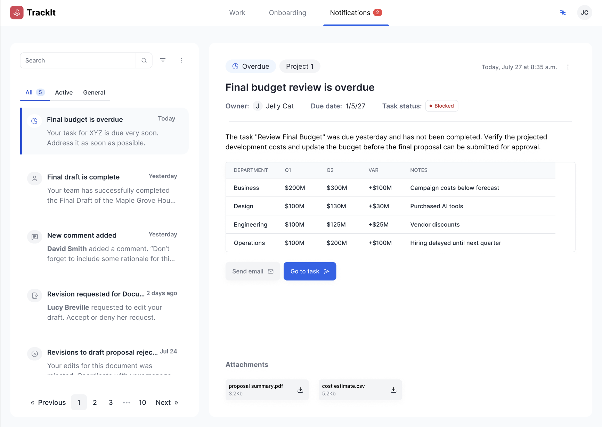
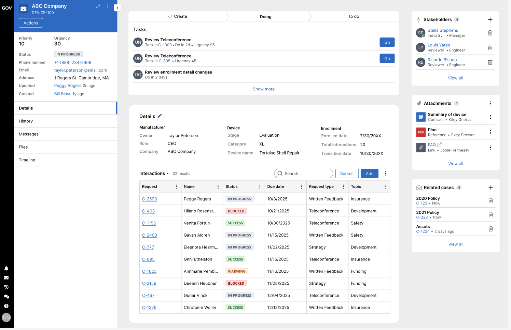
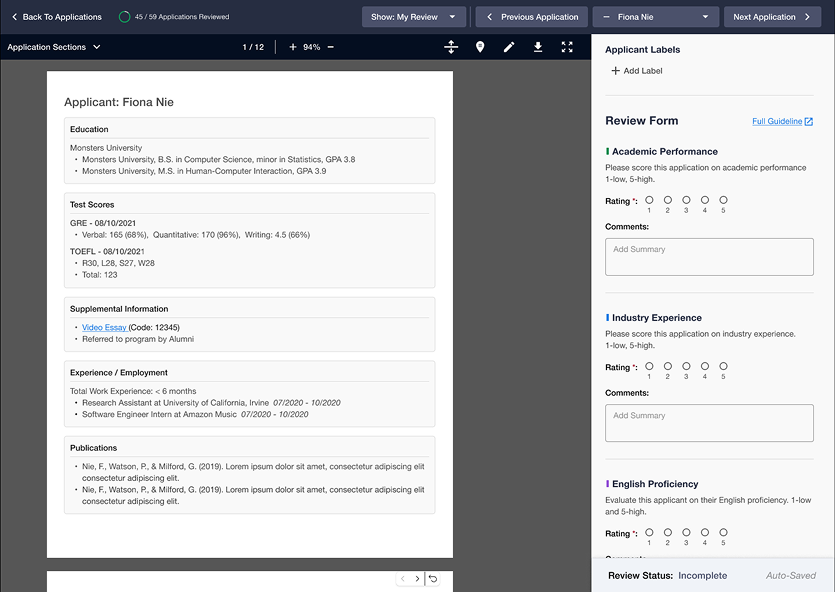
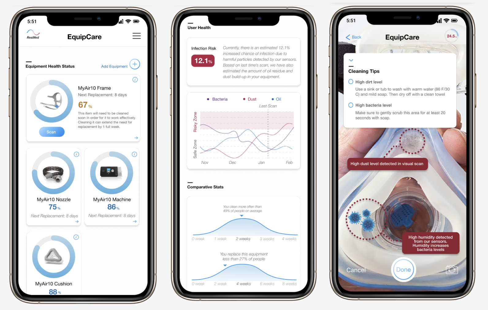

👋
Hi, I’m Emily Zou.
I’m a Product Designer & Researcher that creates clear, kind, and human-centered designs that genuinely
matter.


Past Works

Equipcare
Improved healthcare customer retention through a mobile app using AI & AR/VR
I was the lead mobile apps designer for developing an AI-assisted equipment care app for a mock healthcare client, ResMed.

Children's Book Design
Created a physical children's book about the environment in the Middle East
I designed & printed a fun and informative children's book for 5 to 8 year olds to learn more about the environment.

Hack to the Future
I directed a hackathon for the Women in Computing Sciences.
I co-directed and designed a hackathon experience, scaling both the team and resources from 0->1 and raised over $4,000+ in funding.